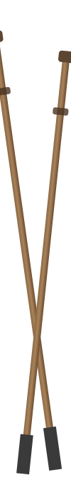
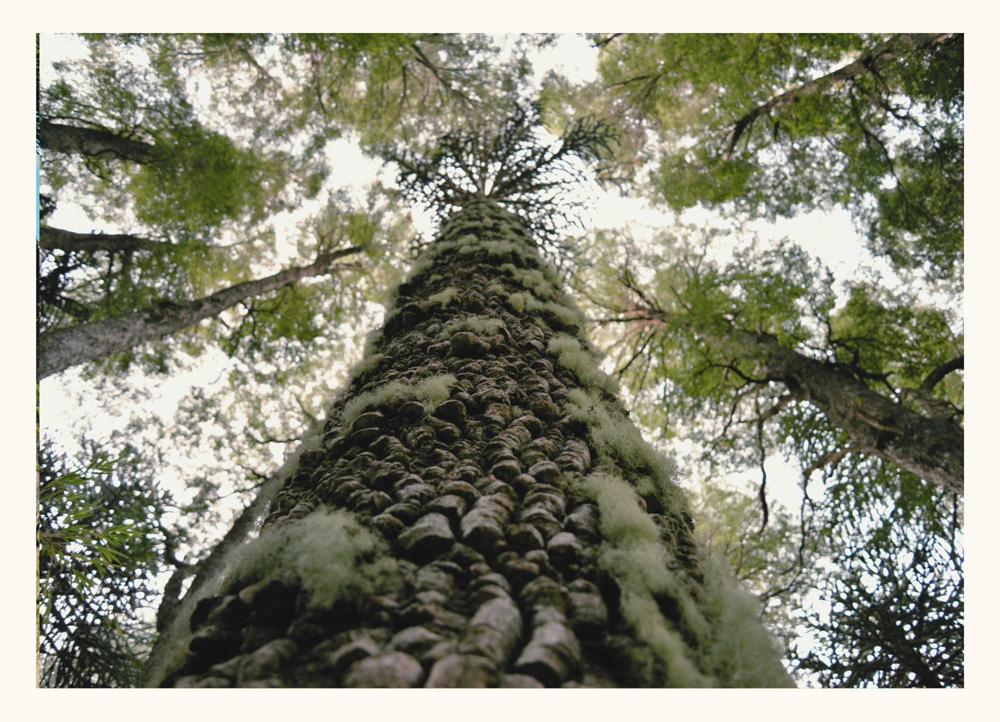
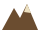
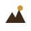
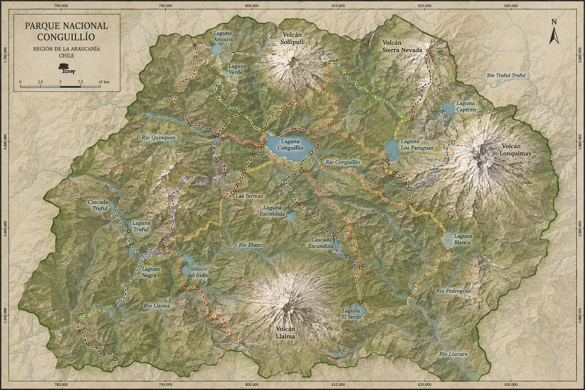
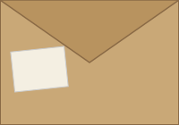

DIARIO DE TREKKING
Parque Nacional Conguillío · Araucanía Andina

Cuaderno de campo
Senderos completados0 / 0
Km recorridos0.0 / 0.0
0 km0 km
Bitácora de rutas
Primer paso
10 km
25 km
Mitad del parque
Ambos volcanes
Maestro

FOTOS
hecho a mano para quien se está por perder un poco entre araucarias 🌲